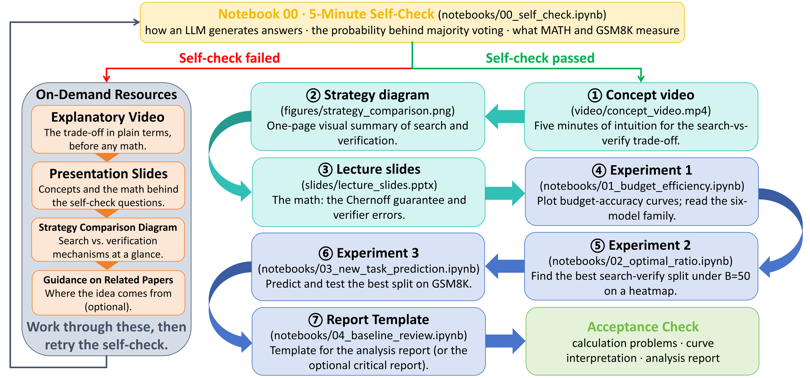

The idea
Search puts the whole budget into candidates and takes a majority vote. Verification splits it: some calls for candidates, the rest for the model to score each one.
With independent candidates and single-answer accuracy above 1/2, majority voting has a guarantee: the failure probability falls exponentially in the number of candidates. Verification has no such guarantee. It helps only when the judge can tell good answers from bad ones, and in this course the judge is the model grading its own answers. Our measurements say that judge is weak.
At a moderate budget under a weak judge, search usually wins. Which split is best depends on your model, your judge and your budget.
The materials
A five-minute self-check
Three questions on decoding, binomial probability, and the MATH and GSM8K benchmarks. Answer them or read the answers first.
Three experiments
Budget-accuracy curves for six models, the best split at a budget of 50 calls, and a prediction for a new task that you test yourself.
A report template
Judge whether a research paper's baselines are fair, with the questions the course asks of its own results.
Five minutes, twenty slides
A five-minute explainer and a twenty-slide lecture deck, from the Chernoff bound to the verifier's errors.
What we measured
| Strategy | Split | Accuracy | 95% CI |
|---|---|---|---|
| Search | 50 candidates, majority vote | 0.853 | [0.81, 0.89] |
| Search + light verification | 25 candidates × 1 check | 0.717 | [0.67, 0.77] |
| Verification | 5 candidates × 9 checks | 0.753 | [0.70, 0.80] |
At the same 50-call budget, both verification rows trail pure search. The judge is the model that wrote the answers, and its scores for right and wrong answers overlap heavily.
Where to start
Thirty minutes, intuition first
Watch the video, look at the strategy diagram, then open Notebook 01. The trade-off is visible before any math.
The full sequence
Notebook 00 for the prerequisites, 01 to 03 for the experiments, 04 for the report. With the precomputed cache every plot loads in seconds. Running the experiments yourself takes one to two hours.
The learning path

Downloads
- Paper, two pages plus references
- Video, five-minute explainer
- Slides, PDF · PPTX
- Notebook 00, self-check
- Notebook 01, budget curves
- Notebook 02, optimal mix
- Notebook 03, new-task prediction
- Notebook 04, baseline review
- Precomputed results
- Source code and data
The notebooks are cache-first. Every experiment cell skips itself unless you set RUN_EXPERIMENT = True in the configuration cell, so the whole course runs on a laptop, with no GPU and no long wait.